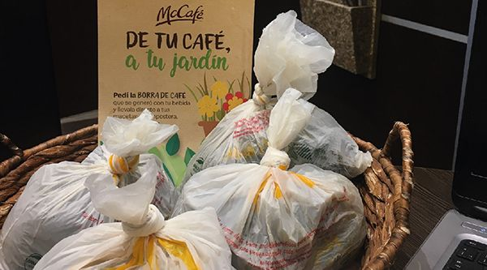

Reafirmando su compromiso con la inclusión social en la comunidad, McDonald’s lanzó este proyecto que propone la adaptación de los más de 200 locales de todo el país con condiciones que faciliten la visita de personas con Trastorno del Espectro Autista (TEA) y sus familias. La iniciativa contempla la capacitación de todos los colaboradores en esta temática y la incorporación de un menú especial desarrollado en pictogramas, buscando mejorar así la experiencia de compra y consumo de quienes sufren de esta condición.

Bajo el concepto “Museo en Movimiento”, McDonald’s exhibirá obras de artistas que integran la colección del Museo Nacional de Bellas Artes. La iniciativa, impulsada junto a Coca-Cola, se podrá disfrutar exclusivamente pasando por AutoMac en cualquier medio de movilidad.

En el marco de la celebración del Día del Reciclaje, Arcos Dorados, el mayor franquiciado de McDonald’s en el mundo y quien opera la marca en Argentina, anuncia sus principales avances en iniciativas para reducir, reciclar y reutilizar en su operación. La compañía logró en tan solo 2 años reducir más de 1.300 toneladas de plásticos en los países en los que opera en América Latina y el Caribe. A su vez, a principios de 2021 la compañía lanzó una iniciativa junto a Tetra Pak y Coca-Cola para fomentar la separación de residuos a través de cestos en espacios exteriores que ya está disponible en 106 locales de todo el país.
Desde hace 8 años, la compañía viene promoviendo la lectura infantil en todos los restaurantes McDonald’s, la cual permite escoger entre un libro o un juguete con cada menú de Cajita Feliz. En este Día Internacional del Libro, donde el tiempo que pasan los niños frente a las pantallas digitales ha crecido como consecuencia de la pandemia, McDonald’s invitó a vivir un momento de desconexión y entregó a través de AutoMac una Cajita Feliz con un libro de regalo. Además, Arcos Dorados donará más de 21.000 libros a distintas localidades de todo el país.